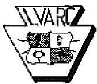
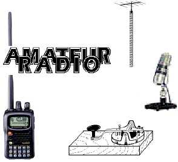
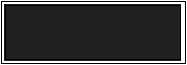

Getting Started In
Amateur Radio
Here's your invitation to a friendly, high-tech
hobby that's got something fun for everyone!
You can become an Amateur Radio operator--
no matter what age, gender or physical ability.
People from all walks of life pass their entry-
level exam and earn their Amateur (ham)
Radio license. They all share the diverse
world of activities you can explore with ham
radio.
You never know who you'll run into when
communicating with Amateur Radio: Young
people, retirees, teachers and students,
engineers and scientists, doctors, mechanics
and technicians, homemakers...
It's Easy to Get Started
The most popular license for beginners is the
Technician Class license, which requires
only a 35 multiple-choice question written
examination. The test is written with the
beginner in mind. Morse Code is not
required for this license. With a Technician
Class license, you will have all ham radio
privileges above 30 megahertz (MHz). These
privileges include the very popular 2-meter
band.
Many Technician licensees enjoy using small
(2 meter) hand-held radios to stay in touch
with other hams in their area. Technicians
may operate FM voice, digital packet
(computers), television, single-sideband voice
and several other interesting modes. You can
even make international radio contacts via
satellites, using relatively simple equipment.
Getting started in Amateur Radio has never
been easier. First, locate a radio club in your
area. Some radio clubs offer ham radio
licensing classes, or they can find a club
volunteer to answer your questions. You
may even be invited to attend a local radio
club meeting. ARRL publishes popular ham
radio license study guides to help you learn
the things you'll need to pass your exam and
have fun with Amateur Radio.
The Amateur Radio license examinations are
administered by ham radio volunteers. When
you're ready to take your exam, you'll need to
locate an exam session near you.
What Can Amateur Radio
Operators Do?
Ham radio operators use two-way radio
stations from their homes, cars, boats and
outdoors to make hundreds of friends around
town and around the world. They
communicate with each other using voice,
computers, and Morse code. Some hams
bounce their signals off the upper regions of
the atmosphere, so they can talk with hams
on the other side of the world. Other hams use
satellites. Many use hand-held radios that fit
in their pockets.
An important aspect of amateur radio includes
emergency communications. Hams provide
communications when regular radio
operations fail or become strained because of
an emergency.
The
Lehigh Valley
Amateur
Radio Club
LVARC
W3OI
http://www.w3oi.org